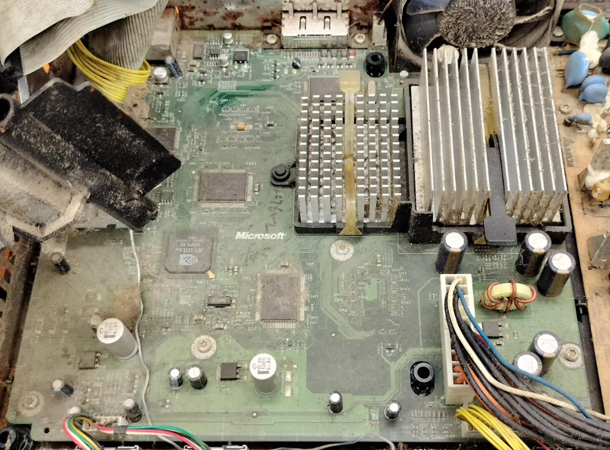
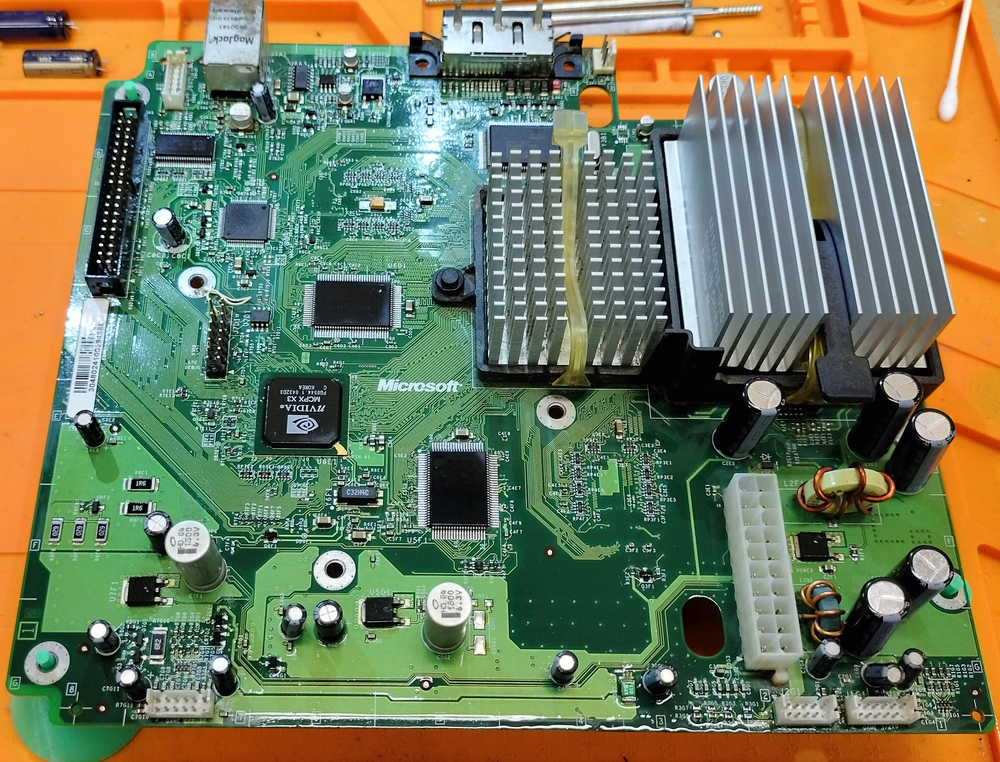

Restoration & maintenance
Full tear-down, cleaning, recap, thermal refresh, and test runs so your Xbox runs reliably again.

Local Huntsville repairs, vintage restoration, and classic Xbox mods from a specialist who treats every console like a collector’s piece.
Full tear-down, cleaning, recap, thermal refresh, and test runs so your Xbox runs reliably again.
Replace failing capacitors, repair trace damage, and stop corrosion before it spreads.
Repair, replace, or remove the DVD drive depending on your goals and console condition.
Softmods, HDD upgrades, improved cooling, and practical hardware customizations.
Tell me what’s wrong and what you want for your Xbox.
I’ll review the console and send a clear repair plan.
I repair, clean, and test until the console is stable and ready to use.
Pick it up locally or have it returned safely when the work is done.
The Original Xbox was a console ahead of its time — powerful, moddable, and built like a tank. Two decades later, these systems deserve a second life. There’s something special about hearing that startup chime again and knowing it’s running stronger than ever.




Check out the Gallery for more transformations.
Every restored console is a piece of gaming history saved from being forgotten. Together, we can make sure the spirit of early 2000s gaming keeps shining bright — one Xbox at a time.